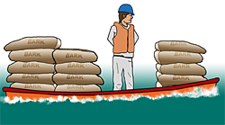

MANNSKAPSBEHOV
Anbefalt mannskap pr. lag:
- 4 – 6 personer pr. lag avhengig av arbeidsoperasjon
Minimum mannskapsbehov pr. enhet:
- 2 personer pr. båt ved utsetting av lenser fra land
- 2 personer pr. båt ved sleping av lenser
- 2 personer på land for klargjøring og utsetting av lenser
- 3 personer pr. båt ved arbeid med lenser
- 3 personer pr. båt ved oljeopptaking
Generelt utstyr på båt:
- Kommunikasjonsutstyr
- Minimum 1 anker for oppankring av lenser
- Tau – minimum 2 kveiler forankringstau og 2 kveiler recoveryline
- Blåser – 1 til forankring og 1 til recoveryline
- Lodd til tau
- Kniv / Øks
- Lyskilde (kraftig lommelykt eller lignende)
- Sjøkart over området
Under en oljevernaksjon er båt ofte det viktigste hjelpemiddelet for transport og arbeid.
Påse at:
- Båten er av godkjent fabrikat, for eksempel DnV/CE-merket
- Vær oppmerksom på at båten mister sin godkjennelse dersom det er foretatt konstruksjonsmessige endringer på båten (for eksempel at en tofte eller rekke er fjernet).
Overlast aldri båten.
Se etter merkingen!Summen av personer og last skal i eksempelet nedenfor ikke overstige 700kg!
| Lengde (m) | 5,57 |
| Bredde (m) | 2,03 |
| Vekt (kg) | 525 |
| Max last (kg) | 700 |
| Ant. personer | 8 x 75kg |
| Max motor (kW/hk) | 60/90 |

- Eksempel på utstyr som bør forefinnes om bord; årer, båtshake, dregg, tau, kniv, lys, radarreflektor, øsekar, bøtte og brannslukningsutstyr.
- Vær oppmerksom på andre fartøys bevegelser.
- Fortøy aldri båten slik at den kan bli ødelagt av bølgene av forbipasserende skip.
- Er fartøysfører ikke kjent i området bør sjøkart medbringes.